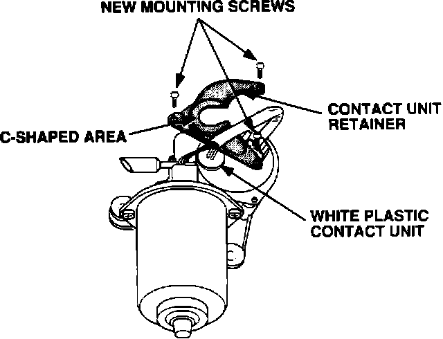
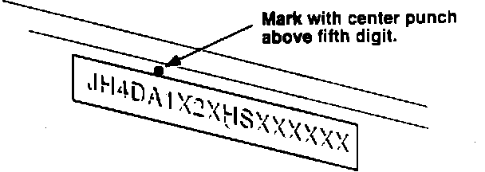
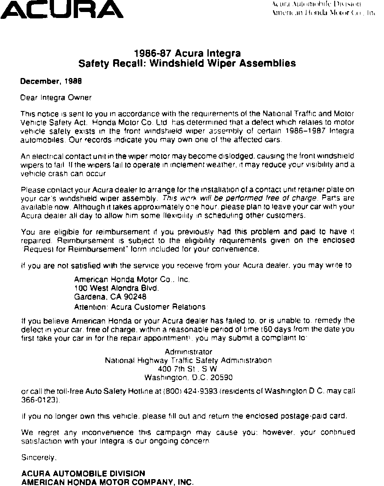

Recall - Front Windshield Wiper Assembly
89acura01YEAR MODEL
'86 - '87 Integra
VIN APPLICATION BULLETIN NO.
See Vehicles Affected
88-025
February 6, 1989
SAFETY RECALL: Front Windshield Wiper Assembly (Supersedes 88-025 dated November 21, 1988)
An electrical contact unit in the wiper motor may become dislodged, causing the front windshield wipers to fail. If the wipers fail to operate in inclement weather, it may reduce your visibility and result in an accident.
VEHICLES AFFECTED
'86:
5DR JH4JDA1 . . . GS000001 thru GS009828 3DR JH4DA3 . . . GS000001 thru GS009236
'87:
5DR JH4DA1 . . . HS000001 thru HS006183 3DR JH4DA3 . . . HS000001 thru HS007349

CORRECTIVE ACTION
Attach a contact unit retainer (listed under PARTS INFORMATION) to the gear cover plate.
1. Inspection:
^ If the contact unit is white plastic and above the surface of the gear cover, then complete steps 2 thru 9.
^ If the contact unit is brown and below the surface of the gear cover, then it is NOT subject to this RECALL, so only complete step 9.
CAUTION: Do not install the retainer on a brown contact unit, it may cause a short.
2. Remove the wiper motor cover, and disconnect the 6P connector.
3. Remove the 3 wiper motor bolts and move the motor so it's more accessible (but don't remove from wiper gear).
4. Loosen the three gear cover plate screws, then remove and discard them.
CAUTION:
When removing the gear plate cover screws, hold the cover plate in place and loosen the three screws one turn first before removing them.
Failure to hold the plate in position may cause it to rotate and damage the contact unit. The # 2 fuse will also blow. If the contact unit is damaged, then the wiper motor will have to be replaced.
5. Install the contact unit retainer so the C-shaped area is on top of the white plastic terminal; then secure using the three new mounting screws.

6. Reinstall the motor bolts and cover.
7. Check the wiper fuse and replace if necessary.
8. Test the wipers for proper operation.
9. Center punch an update completion mark on the firewall above the fifth digit of the Vehicle Identification Number.
CARS IN YOUR INVENTORY
Cars that are still in stock, whether new or used, must have the recall procedures performed before release to the customer.

CUSTOMER NOTIFICATION
All owners of affected vehicles will be notified of this campaign by mail. Owners will be asked to contact their nearest Acura dealer for installation of the contact unit retainer (see below for the text of the customer letter).
PARTS INFORMATION
Contact Unit Retainer Set; P/N : 38409-SB2-305
If you have old parts in stock, return to your nearest parts warehouse as described in Parts Bulletin 88-0004.
Example of customer letter:
WARRANTY CLAIM INFORMATION
Operation number:
Inspection only: 740245 Inspection &
Replacement: 740205
Flat rate time:
Inspection only: 0.2 hrs Inspection &
Replacement: 0.4 hrs
Failed part: P/N 38401-SB2-672
Defect code: 232
Contention code: J23